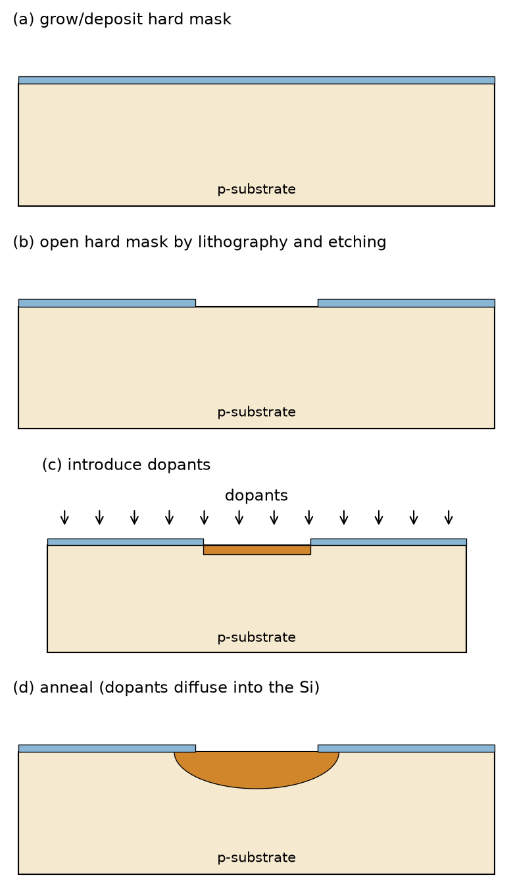
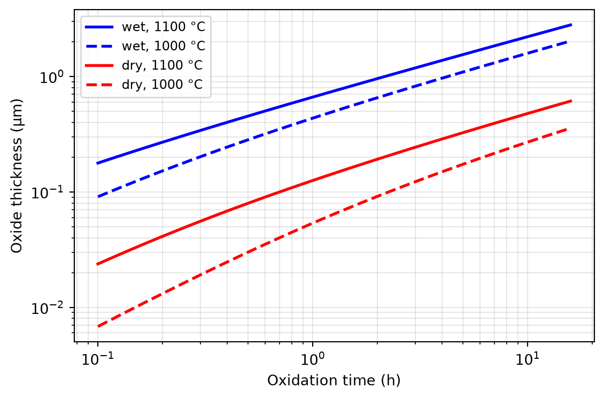
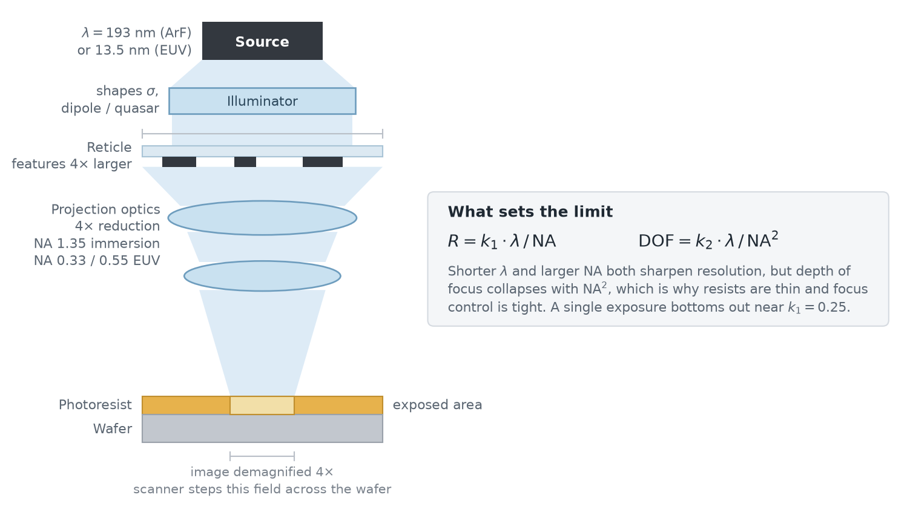
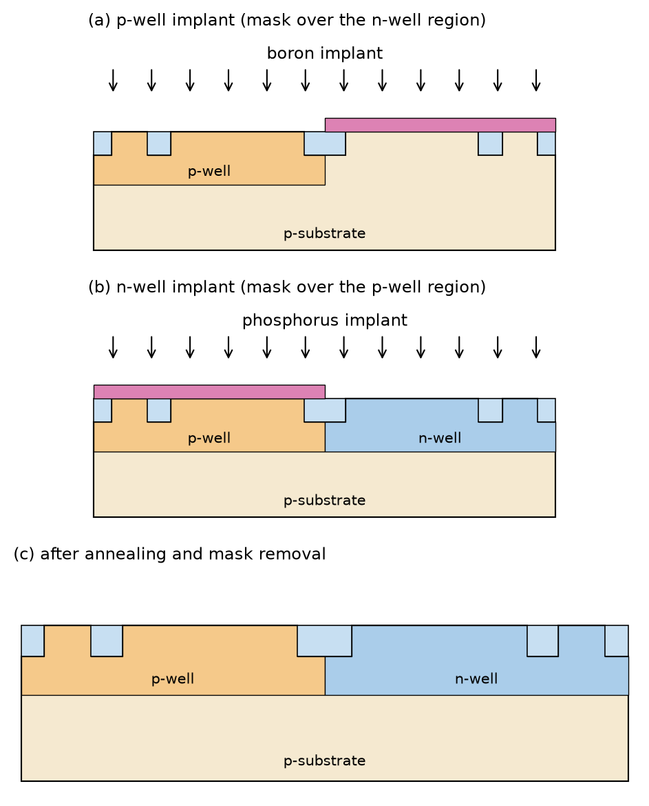
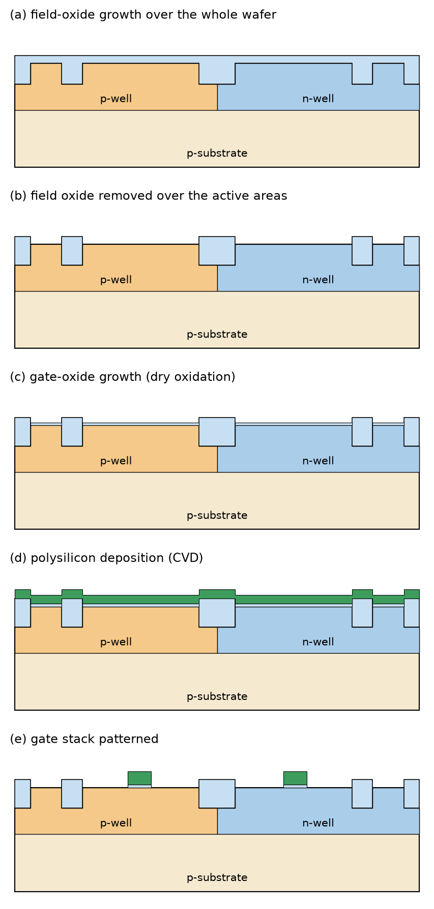
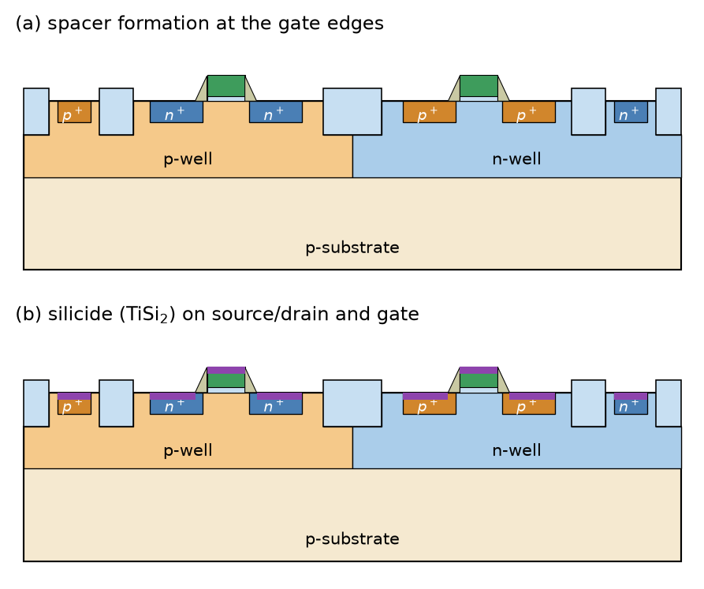

Figure 26: Resistivity of silicon at 300 K as a function of the doping concentration, calculated as \(\rho = 1/(q \mu N)\) with doping-dependent carrier mobilities (Arora mobility fits).
Doping
Note 3: Example: Wafer Doping
Let us assume a \(p\)-type wafer with 50 Ω cm resistivity (as used in IHP SG13 CMOS). Using Figure 26, we find \(N_\mathrm{a}= p_0 \approx 2.7 \times 10^{14}\,\text{cm}^{-3}\), which results in \(n_0 \approx n_\mathrm{i}^2 / N_\mathrm{a}= 3.7 \times 10^{5}\,\text{cm}^{-3}\). This doping concentration equates to about one acceptor atom per 180 million silicon atoms!
3.2 Selective Doping
Selective Doping
The picture from a photomask is optically transferred into a photoresist on the wafer, using a process called photolithography.
This photoresist is developed and used to selectively etch a masking layer, like SiO2 (a “hard mask”).
After this step, the silicon surface is opened at specific locations and covered otherwise, allowing the introduction of dopants into defined areas of the wafer.
Selective Doping

Figure 27: Selective doping using a hard mask: (a) the wafer is covered by a hard mask (e.g., SiO\(_2\)), (b) the hard mask is opened by photolithography and etching, (c) dopants are introduced through the opening (shown here by implantation), and (d) after annealing, the dopants have diffused into the silicon and the crystal damage is repaired.
3.2.1 Oxidation of Silicon
Oxidation of Silicon

Figure 28: Thermal oxide growth on silicon calculated with the Deal-Grove model, \(x_\mathrm{ox}^2 + A x_\mathrm{ox} = B t\), for wet and dry oxidation at different temperatures.
Oxidation of Silicon
The gate dielectric of the MOSFET.
Hard masks for implantation or doping.
Device isolation and isolation of wiring.
3.3 Photolithography
Photolithography
Figure 29: Patterning by photolithography: (a) the oxidized wafer is coated with photoresist and exposed through the photomask, (b) with a positive resist, the exposed resist dissolves during development, (c) the hard mask is etched through the resist opening and the resist is removed, and (d) a negative resist creates the inverse image.
3.3.1 Photomasks
Photomasks

Figure 30: The optical column of a projection lithography scanner: light from the source passes through the illuminator, which shapes its angular distribution, onto the reticle, and the projection optics image a demagnified copy of the reticle field into the photoresist.
Optical proximity correction (OPC) enhances the contrast of critical layout features like line ends and corners by pre-distorting the mask shapes.
Phase-shift masks (PSM) vary the thickness of the mask, so that phase changes of the light can be used for contrast enhancement.
Immersion lithography uses the refractive index of water (\(n = 1.44\)) between lens and wafer to achieve \(\mathrm{NA} > 1\); per Equation 46, the higher \(n\) also restores part of the depth of focus lost to the larger \(\mathrm{NA}\).
Wet etching, using liquid chemicals (typically isotropic).
Dry etching, using chemically active ionized gases in a plasma reactor (can be highly anisotropic).
3.5 Doping Techniques
Doping Techniques
Diffusion: dopants move (by diffusion) from the wafer surface into the wafer material; the source of the dopants is a gas (e.g., POCl3 for phosphorus doping) or a solid film on the wafer surface.
Ion implantation: dopants are ionized, accelerated, and shot into the wafer material.
Epitaxy: additional silicon is grown on the wafer surface and doped in situ while growing the silicon layer.
3.5.1 Diffusion
Infinite source of impurities at the surface: the resulting doping profile follows a complementary error function (erfc).
Finite source of impurities at the surface: the resulting doping profile is a Gaussian, \(N(x,t) = N_{0}/\sqrt{\pi D t} \cdot \exp(-x^{2} / (4 D t))\), with \(x\) the distance from the wafer surface, \(N_0\) the initial dopant dose per area, \(D\) the diffusivity, and \(t\) the diffusion time.
Figure 31: Doping depth profiles (normalized): diffusion always peaks at the wafer surface, following an erfc profile (infinite source) or a Gaussian profile (finite source), while ion implantation places the doping peak at the projected range \(R\) below the surface (shown for \(R = 100\,\)nm, \(\Delta R = 30\,\)nm).
3.5.3 Epitaxy
3.6 Thin-Film Deposition
Thin-Film Deposition
The gate dielectric of the MOSFET, like SiO2 (either thermally grown or deposited via CVD).
The gate material, polysilicon, which is also used for local interconnects and resistors.
Metal films for interconnects (metals like Al or Cu, and silicides like TiSi2, WSi2, TaSi2, NiSi2).
Contact and via materials, like W, Al, or Cu.
Dielectrics between metal layers and spacers, like SiO2 and Si3N4.
Figure 32: Thin-film deposition methods: (a) in chemical vapour deposition (CVD), precursor gases react at the heated wafer surface and deposit a thin film; (b) in sputtering, ions from a plasma knock atoms out of a target, which then condense on the wafer surface.
3.7 Interconnects
Interconnects
Figure 33: The damascene process for copper interconnects: (a) trenches are etched into the dielectric, (b) a conformal diffusion-barrier liner is deposited, (c) copper is (electro-)deposited, overfilling the trenches, and (d) the excess copper and the liner on the field are removed by chemical-mechanical polishing (CMP), leaving metal only in the trenches.
3.8 An Exemplary CMOS Process Flow
An Exemplary CMOS Process Flow
Figure 34: CMOS process, step 1—shallow trench isolation: (a) a hard mask is grown and patterned by photolithography, (b) the isolation trenches are etched anisotropically into the silicon, and (c) the trenches are filled with oxide and the surface is planarized.
An Exemplary CMOS Process Flow

Figure 35: CMOS process, steps 2 and 3—well formation: (a) a mask covers the right half of the wafer while boron is implanted to form the p-well, (b) the complementary mask is used for the phosphorus implant of the n-well, and (c) after annealing, both wells are formed.
An Exemplary CMOS Process Flow

Figure 36: CMOS process, steps 4 and 5—gate formation: (a) the field oxide is grown over the whole wafer, merging with the oxide already filling the trenches, (b) it is removed again over the active areas, (c) the thin gate oxide is grown by dry oxidation on the exposed active areas, (d) polysilicon is deposited by CVD over the whole wafer, following the topography of the field oxide, and (e) the gate stack is patterned by photolithography and etching.
An Exemplary CMOS Process Flow
Figure 37: CMOS process, steps 6 and 7—self-aligned source/drain implants: (a) with the PMOS and the p-well tap covered by resist, phosphorus is implanted; the polysilicon gate itself masks the channel, so the n\(^+\) regions are self-aligned to the gate, and the same implant forms the n\(^+\) tap contacting the n-well; (b) the complementary boron implant forms the p\(^+\) source/drain regions of the PMOS and the p\(^+\) tap contacting the p-well.
An Exemplary CMOS Process Flow

Figure 38: CMOS process, step 8—spacer and silicide formation: (a) an oxide layer is deposited and anisotropically etched, leaving spacers at the gate edges, and (b) sputtered titanium reacts where it touches silicon, forming a low-resistance silicide (dark) on source/drain and gate; the unreacted metal is then removed.
An Exemplary CMOS Process Flow
Figure 39: CMOS process, steps 9 to 11—back-end: (a) inter-layer dielectric deposition, CMP, and contact formation, (b) first metal layer sputtered and patterned, and (c) inter-metal dielectric, vias, and second metal layer; the finished wafer is then passivated and opened at the pads.
3.9 The Open-Source PDK IHP SG13
The Open-Source PDK IHP SG13
Support for internal 1.2 V/1.5 V core MOSFETs and 3.3 V I/O MOSFETs
An aluminum metal stack with 5 thin and 2 thick levels of metal (see Figure 40)
Silicided, standard, and high-sheet-rho poly resistors
Figure 40: Cross-section of the IHP SG13 technology (not to scale): five thin metal layers (Metal1 to Metal5) for dense routing and two thick top metal layers (TopMetal1, TopMetal2) for power routing, inductors, and low-loss RF interconnects, with the MIM capacitor embedded between Metal5 and TopMetal1.
3.10 Technology Qualification
Technology Qualification
Table 7: Typical technology qualification tests
Test (examples)
Standard
Motivation & check
HTOL (high-temperature operating life)
JESD22-A108
Subject the IC to high temperature under operation over an extended duration.
ESD HBM
JS-001-2023
ESD test, human-body model.
ESD CDM
JS-002-2022
ESD test, charged-device model.
Latch-up
JESD78
Latch-up test.
Electrical test (ED)
JESD86
Check conformance to the datasheet across conditions and lots.
References
Deal, Bruce E., and Andrew S. Grove. 1965. “General Relationship for the Thermal Oxidation of Silicon.”Journal of Applied Physics 36 (12): 3770–78.
Hu, Chenming. 2010. Modern Semiconductor Devices for Integrated Circuits. Pearson.
Sproul, Alistair B., and Martin A. Green. 1991. “Improved Value for the Silicon Intrinsic Carrier Concentration from 275 to 375 K.”Journal of Applied Physics 70 (2): 846–54. https://doi.org/10.1063/1.349645.